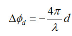
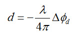

Phase to Displacement Operator
In case that some of the point scatterers on the ground slightly change
their relative position in the time interval between two SAR
observations (as, for example, in the event of subsidence, landslide,
earthquake, etc.), then the following additive phase term, independent
of the baseline, appears in the interferometric phase:

where λ is the transmitted wavelength and d is the relative scatterer
displacement projected on the slant range direction. The
interferometric phase variation can be split into three contributions:
- A phase variation proportional to the relative terrain altitude, referred to a horizontal reference plane;
- A phase variation proportional to the slant range difference of the point targets; and
- A phase variation proportional to the relative scatterer displacement.
If a digital elevation model (DEM) is available, the first phase term
(i.e. the altitude contribution) can be subtracted from the
interferometric phase. This operation is known as topographic phase
removal.
If precise orbital data is available, the second phase term can also be
computed and subtracted from the interferometric phase. This operation
is called interferogram flattening or flat-Earth phase removal.
As a result of the above two operations, it generates a phase map
proportional only to the relative terrain displacement which can be
computed by

This operator converts interferometric phase to displacement map.
Input and
Output
- The
input to this operator should be interferogram with flat-Earth phase and topographic phase removed.
- The output of this operator is the displacement map. The unit of the displacement is meter.
Reference:
[1] Ferretti A., Massonet D., Monti Guarnieri A., Prati C., Rocca F.,
2007, InSAR Principles: Guidelines for SAR Interferometry Processing
and Interpretation, ESA TM-19